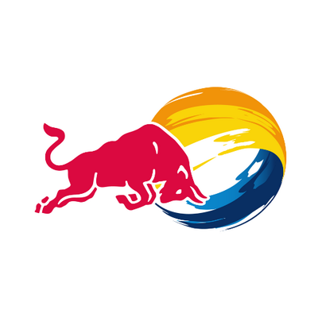
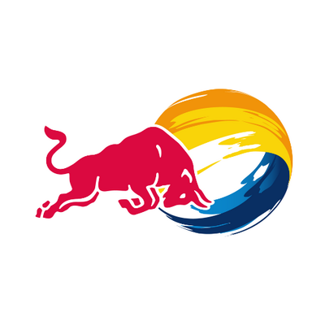
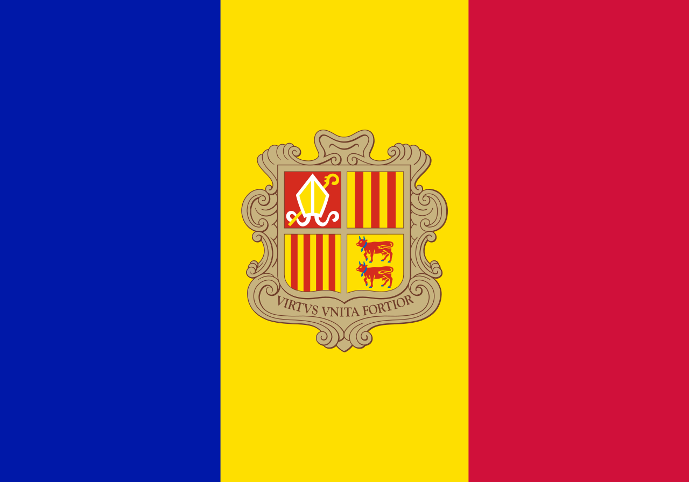

Athlète Francais
Né le 13 mai 1994
Détenteur de deux records : un mondial, un d'Europe

retour
Athlète Francais
Né le 13 mai 1994
Détenteur de deux records : un mondial, un d'Europe
Originaire de Nice, Loïc est un cycliste spécialisé dans le vtt de descente.
Il est nottamment sponsorisé par FOX racing  et REDBULL .
et REDBULL .
| épreuve | lieu | année |
|---|---|---|
| Champion du monde de descente juniors |  |
2012 |
| Champion du monde de descente |  | 2015 |
| Champion du monde de descente |  |
2017 |
| Champion du monde de descente |  |
2018 |
| Champion du monde de descente | 2019 |
| année | record | lieu |
|---|---|---|
| 2011 | Champion de France de descente juniors |  |
| 2013 | Champion de France de descente élites | |
| 2014 | Champion de France de descente élites | |
| 2015 | Champion de France de descente élites | |
| 2017 | Champion de France de descente élites |
Championnat de descente élites 2019
Avec 1 462 points il se place au sommet du classement devant un autre francais, Amaury Pierron